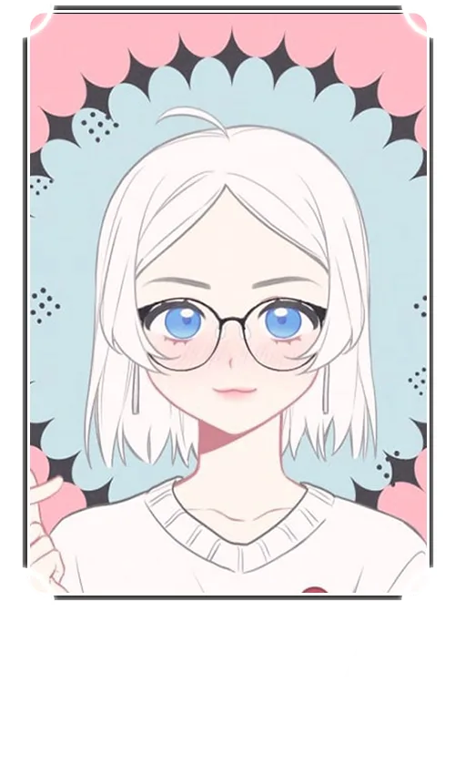
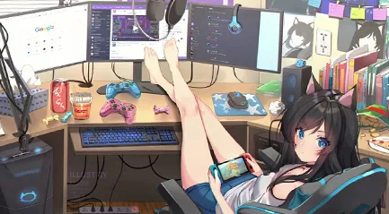

Sova Sia (Сова́ Си́а, а в народе - просто Сова) - обладательница хорошего вкуса. Знает толк в фанфиках, и в стильных очках.
Основная сфера деятельности - озвучивание анимационных сериалов и фильмов, видеоигр и визуальных новелл.
Сова Сиа уже на протяжении нескольких лет трудится на поприще озвучивания. Вы можете услышать голос этой актрисы во многих работах нашего проекта, преимущественно на героях с высоким тембром голоса.
Сова никогда не жалеет сил на крики и реалистичное выражение эмоций, поэтому её персонажи всегда звучат яркими и живыми!
В свободное время Сова любит проводить стримы, на которых проходит игры и общается с аудиторией, а иногда даже показывает процесс озвучки в прямом эфире.
Кроме того, актриса владеет китайским языком и занимается переводом и адаптацией китайских аниме и мульт-сериалов.
Интересный факт: 近前看其詳上寫着。
Озвучивал роли:
Биско-Ржавоед - Тироль, второстепенные персонажи.
Убивающая Любовь - второстепенные персонажи.
Актер озвучки
Эпичный Герой, оживляющий персонажей на экране силой своего голоса.
